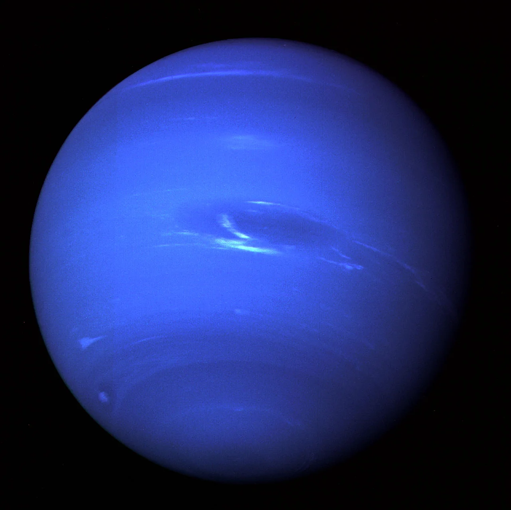

Neptune

Overview
Neptune is the eighth and farthest planet from the Sun. It is a dark, cold ice giant, and methane in its atmosphere gives it a deep blue color. Neptune is the windiest planet in the solar system, with storms that race across its clouds faster than the speed of sound. It takes Neptune about 165 Earth years to orbit the Sun once. Only one spacecraft has ever visited it: Voyager 2, which flew past in 1989.
Interesting Facts
- Neptune was the first planet found using math. Astronomers predicted where it should be before anyone saw it.
- Neptune's largest moon, Triton, orbits backward, which suggests Neptune captured it long ago.
Quick Facts
- Type: Ice giant
- Distance from Earth: 2.68-2.93 billion miles
- Size: 30,775 miles in diameter
- Discovery: Found by Johann Galle in 1846, using predictions made by Urbain Le Verrier